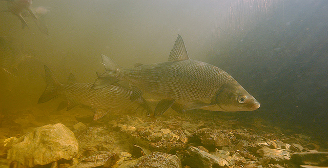

 Herbst and Marsden (2011) compared the precision, bias, and reader uncertainty of ages estimated from the scales, dorsal fin rays, and otoliths of 151 Lake Whitefish (Coregonus clupeaformis) captured from Lake Champlain in 2009. The inital age estimates from two readers and a consensus age between the two readers from each of the three structures (variables are the structure name with a “1” or “2” appended to denote the reader or “C” for the consensus age) are in WhitefishLC.csv (view, download, meta).
This excericise may be continued here or here.
from Derek H. Ogle , created 01-Oct-15, updated 08-Nov-15, Comments/Suggestions.